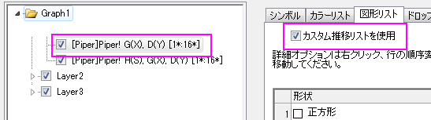

トリリニアダイアグラム
piper-diagram
サマリー
トリリニアダイアグラム（パイパーダイアグラム）は、水文地質学の研究において、水試料中の化学物質の効果的なグラフィカル表現として使用されます。6つのイオングループ、Ca、Mg、Na＋Kカチオン、硫酸塩、塩素及び炭酸水素アニオンのパーセンテージ値をプロットする際に用いられます。
カチオンとアニオンは2つの3点グラフにプロットされ、ひし形のグラフに投影されます。Originでは、3つのプロットがそれぞれのグラフレイヤとしてプロットされます。

学習する項目
このチュートリアルでは、以下の項目について説明します。
- パーセンテージデータからトリリニアダイアグラムを作図する
- 3点グラフとひし形グラフの間隔を編集する
- トリリニアダイアグラム内にラベルを追加する
ステップ
- 新しいワークブックを作成し、データ：ファイルに接続：Text/CSVと選択して<Origin インストールフォルダ>\Samples\Graphing\
にあるPiper.datをインポートします。
- インポートしたワークシートのA列はそれぞれのサンプルに対するIDを示します。B列からG列は6つのイオングループ（Ca,
Mg, Na+K, Cl, SO4, CO3+HCO3）のパーセンテージの値が、H列は水中の総溶解固形分の量が入力されています。カチオンのパーセントは、カチオンの総量に比例し、アニオンについても同様に算出されます。
- Note：組み込みワークブックテンプレートを使用して異なる単位(MEq/mgL/PPM)からパーセントに変換可能です（ファイル：新規作成：テンプレートからで開くことができます）。詳細については、このヘルプファイルを参照してください。
- B列からG列を選択して作図：Specialized：トリリニアダイアグラムと選択してplotpiperダイアログを開きます
- サンプルIDとして列Aを選択し、総溶解固形分(TDS)には、列Hを選択します。
- Note：出力グラフとして既に作図しているトリリニアダイアグラムを選択すれば、選択された新しいデータを既存グラフに追加することができます。
- OK をクリックして、トリリニアダイアグラムを作図します。

- トリリニアダイアグラム作図の際、サンプルIDとTDSはオプションです。サンプルIDが指定されていると、シンボルの色の形状の制御に使用されます。TDSが指定されていると、ひし形のレイヤ（1）内に円が表示され、大きさの制御に使用されます。また、トリリニアダイアグラムの凡例には、各サンプルが表示されます。
グラフの編集
以下の編集操作により、サマリーで表示されている画像のグラフと同じようにグラフを編集します。
- 3点グラフとひし形のグラフの間隔を変更するには、グラフレイヤ上でダブルクリックして作図の詳細ダイアログを開きます。左側のパネルで、Layer
2を選択します。レイヤの大きさタブを開き、左を130にし、菱形の上部頂点とレイヤ2の最頂点間の距離が菱形の辺の長さの130％になるようにします。適用ボタンをクリックします。
- シンボルの色または形状の推移リストを変更するには、左パネルでLayer1ノードの1番目のデータプロットを選択します。シンボルタブ：シンボルの色：ポイント毎と選択し、カラーリストを変更します。また、図形リストからシンボルの形状を変更します。
- 
- ひし形のレイヤ内にデータラベルとしてサンプルIDを追加するには、左パネルでLayer1ノードの1番目のデータプロットを選択します。ラベルタブで以下のように設定します。

- 2つの三点グラフでデータラベルを追加するには、作図の詳細ダイアログの左パネルでLayer2とLayer3ノードのデータプロットを選択し、Layer1と同じように設定します。
- 作図の詳細ダイアログのLayer1の2番目のデータプロットは、TDSを表す円のための設定ページです。左パネルのデータプロットを選択し、シンボルタブを開きます。円のサイズがTDSで制御されていることが確認できます。縮尺倍率が適切な表示のために自動的に定義されます。縮尺倍率を0.03に変更します。
- デフォルトでは、凡例内にはサンプルIDが表示されています。凡例内にサンプリング場所を表示するには、凡例上で右クリックし、凡例：1ポイントずつを選択してポイントごとの凡例を更新ダイアログを開きます。ラベル形式ドロップダウンリストからカスタムを選択して、メニューからwcol(1)を選択します。wcol(9)は9番目のデータ列（サンプリング場所が入力された列）を参照します。